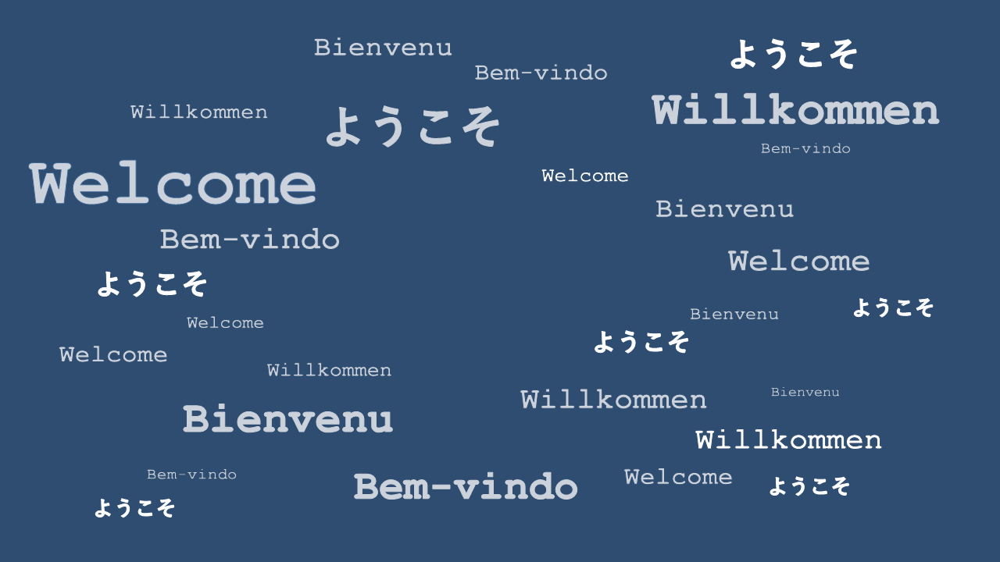

Kai Streiling
Hi there,
you stumbled onto my website where you can find some information about my current research and professional background. There are also annecdotal and hopefully easy to understand summaries for some of the topics in the blog section.
Welcome!
Contact
Feel free to write me an e-mail, if your have questions or feedback or discovered spelling mistakes ;).
I am also always happy to talk about collaborations, projects, movies or technical fancicalities.
